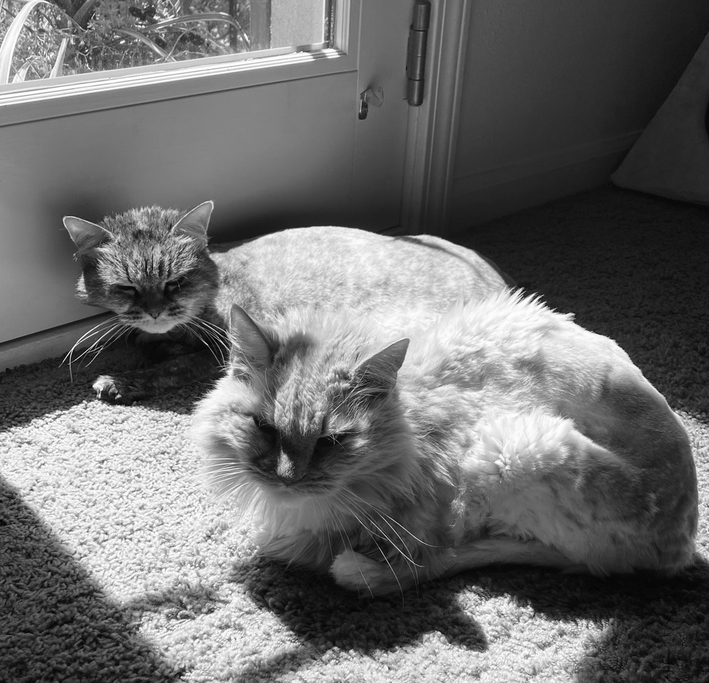

Experiment 5 - Evolutionary Impressions
Description
My partner, Gabe Ahrens, and I collaborated to brainstorm ideas. The idea I was going for was to create a pixel buffer of noise creating values of 0-1 and convert that to pixels of black to white, then each generation randomly pick a number of pixels to swap the values of based on the mutation slider and see if the resulting image is closer to the goal (requires black and white images) if not closer to the inspiration it reverts and tries again. This is the image I was basing off of for the idea: These images in this project are my own images. It's my dog, my cats, my toy discord wompus, and my toy slugs. 
Technical
getInspiration function gets the images and its name, assetURL and credit.
initDesign function creates the grayscale noise based pixel buffer, define and set the measurements and resiing the canvas.
renderDesign function fills in the grayscale pixels with the grayscale colors and rectangular shapes, as well as comparing the pixels to the image's pictures.
mutateDesign function mutates the pixels based on the rate, the mutation slider, and swaps the pixels if the pixels are closer to the image's pixels.
mut function is a helper functions that helps with the mutation function.
Reflection
I worked on the brainstorming phase with a parnter, Gabe Ahrens. My partner, Gabe Ahrens, and I collaborated to brainstorm ideas. Then we gave each other a challenge to give each other one of the ideas. I was having more of a hard time getting the generator to mutate in the way I wanted it to where it was mutating the grayscale pixels. Overall, I feel like I did okay on this assignment. I have assignments from other classes that I've been delaying working on. I feel like I could have put more effort into it if I had more time.